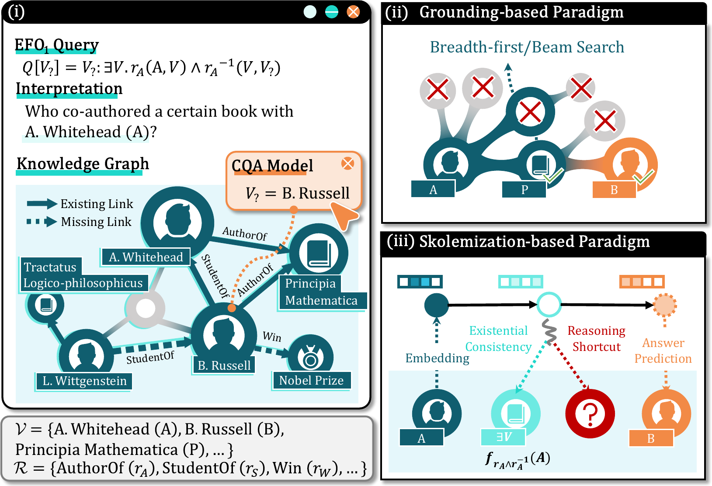
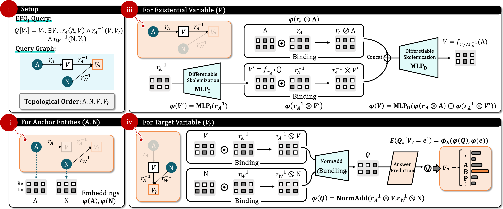

Vector-symbolic constraint encoding
Algebraic operations represent and compose atomic relational constraints in latent space.
A logic-constrained vector symbolic architecture for complex query answering on incomplete knowledge graphs.
Existentially Consistent Skolemized Reasoning for Complex Query Answering on Knowledge Graphs
01 / The question

Motivation figure from the paper · View full size ↗In EFO₁ queries, existential variables link multiple atomic constraints. Maintaining a shared assignment for each variable across those constraints is essential for logical fidelity.
Enumerates candidate entities to maintain logical equivalence.
Query-centric latent representations can entangle existential states across reasoning steps.
02 / The method
LVSA constructs a persistent latent state for each existential variable and reuses it across its connected constraints. Inference follows the query's topological order.

Algebraic operations represent and compose atomic relational constraints in latent space.
A learned module constructs a constraint-conditioned latent state for each existential variable and reuses it at later occurrences.
Logic-guided regularization supports hard negation, including double-negation behavior.
03 / Evidence
LVSA leads the compared Skolemization-based methods on all three standard benchmark datasets. The paper also evaluates fully unobservable queries, empirical existential consistency, and inference efficiency.
Average filtered MRR (%) across the evaluated query types. See the paper for the full protocol and per-query results.
| Dataset | LVSA | Best prior* |
|---|---|---|
| FB15k | 48.4 | 41.8 |
| FB15k-237 | 22.4 | 19.4 |
| NELL995 | 24.1 | 22.6 |
* Best Skolemization-based baseline in the paper's comparison, using the same benchmark protocol.
Empirical existential consistency
LVSA preserves the latent assignment of each existential variable throughout multi-hop reasoning. Path-level P@1 measures whether the jointly decoded assignments form a valid path.
| Dataset | LVSA | CLMPT |
|---|---|---|
| FB15k | 55.3 | 50.2 |
| FB15k-237 | 50.3 | 30.1 |
| NELL995 | 70.5 | 52.6 |
CLMPT is the strongest path-level baseline in the paper's comparison.
04 / Use this work
The repository contains the LVSA implementation, training and evaluation scripts, and reproduction instructions.
@inproceedings{lu2026existentially,
title = {Existentially Consistent Skolemized Reasoning for Complex Query Answering on Knowledge Graphs},
author = {Lu, Yuyin and Chen, Hegang and Xie, Shanrui and Rao, Yanghui and Xie, Haoran and Wang, Fu Lee and Li, Qing},
booktitle = {Proceedings of the 35th ACM International Conference on Information and Knowledge Management},
year = {2026}
}